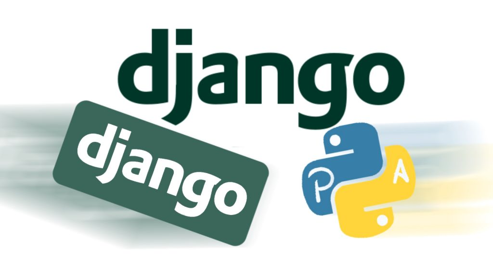

Bienvenido a nuestro blog de Django PIA
Fundamentos de Desarrollo Web

Introduccion de Django
Django es un framework de desarrollo web de código abierto, escrito en Python, que respeta el patrón de diseño conocido como modelo–vista–controlador (MVC). Fue desarrollado originalmente para gestionar páginas web orientadas a noticias de la World Company de Lawrence, Kansas, y fue liberada al público bajo una licencia BSD en julio de 2005; el framework fue nombrado en alusión al guitarrista de jazz gitano Django Reinhardt.
En junio de 2008 fue anunciado que la recién formada Django Software Foundation se haría cargo de Django en el futuro.
La meta fundamental de Django es facilitar la creación de sitios web complejos. Django pone énfasis en el re-uso, la conectividad y extensibilidad de componentes, el desarrollo rápido y el principio «DRY» (del inglés Don't Repeat Yourself,«No te repitas»). El lenguaje Python es usado en todos los componentes del framework, incluso en configuraciones, archivos y en sus modelos de datos.
Ventajas de usar Django
Framework muy seguro
Compatible con muchos otros frameworks
Amplias herramientas de administracion
ORM estándar
Desventajas de usar Django
No es compatible con algunos plugins
Más pesado
Curva de aprendizaje complicada
COMITS REALIZADOS
VISITA NEXUS
VISITA NUESTRO REPOSITORIO EN GITHUB